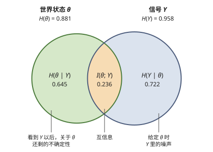

第 2 章 信息的度量
1984 年至 1999 年，《华尔街日报》（Wall Street Journal）每天的股市专栏读起来比平常更悲观的日子，道琼斯工业平均指数（Dow Jones Industrial Average）次日往往下跌，一周之内又把跌幅补了回来，这是 Paul Tetlock 的估计（工作论文版的数字）。这个专栏有没有带来信息、带来多少，取决于说的是关于什么的信息，以及怎样度量。这一章给出本书的几个度量，都以比特（bit）为单位：熵（entropy）、互信息（mutual information）、条件互信息（conditional mutual information）和相对熵（relative entropy）。它把三对东西分开。第一对是一个信息源可能发出的全部消息上的平均，与已经到手的那一条消息；第二对是关于世界状态（state of the world）的信息与关于价格的信息（information about prices），世界状态就是交易者想知道的那件事；第三对是信息量（amount of information）与它的价值。
2.1 悲观的专栏与次日行情
《华尔街日报》的“Abreast of the Market”专栏，在收盘铃声刚响过时写成；用 Tetlock 的话说，它读起来“像是市场前一天那段生命的验尸报告”（工作论文版）。他判断，交易所场内的专营商，即负责每只股票交易的交易商，收盘时不知道的东西，专栏里不太可能有（工作论文版）。1
Tetlock（2007）用 General Inquirer，一个把词语分门别类的程序，统计了 1984 年至 1999 年这 16 年里每天专栏的用词（工作论文版的数字）。他用一种标准的统计方法，从这些计数构造了一个悲观度指标；这个指标大致是 77 个类别中四个类别的加权和，这四类是 Negative（负面）、Weak（软弱）、Fail（失败）和 Fall（下跌）（工作论文版的数字）。
他的主要序列是道琼斯工业平均指数，简称道指，由美国大公司的股票组成，专栏关注的正是这些股票；所用的日收益从 1984 年 1 月 1 日到 1999 年 9 月 17 日（工作论文版的数字）。在他的回归里，悲观度上升一个标准差，即它通常的波动幅度，预测道指次日的收益低 8.1 个基点，一个基点是百分之一个百分点；这比道指日收益的无条件均值还大，无条件均值就是简单平均，为 5.4 个基点；t 统计量是 3.94，单靠偶然很少会得到这么大的值（工作论文版的数字）。Tetlock 指出，道指每天的涨跌相对于它的平均收益非常大，所以与平常一天的涨跌相比，这个效应很小（本书的判断），不过 Tetlock 称它在经济上是显著的（工作论文版）。在随后的四个交易日里，指数补回了 6.8 个基点，在 5% 的水平上显著；五天加起来是 −1.3 个基点，与零没有显著差别（工作论文版的数字）。Tetlock 的结论是，这个效应“在一周之内完全反转”；反转（reversal）指价格朝相反的方向回走。在小盘股上，效应似乎更大、更持久（工作论文版）。他还报告了纽约证券交易所的成交量：悲观度异常高或异常低，预测次日的成交量偏高（工作论文版）。
Tetlock 权衡了两种把专栏当作信息的读法。如果下跌是关于基本面（fundamentals）的新信息造成的，基本面即决定一家公司值多少的事实，那么下跌之后不会有完全的反转；如果专栏只含价格里已有的信息，它不会显著影响收益；证据与两者都不符（工作论文版）。证据符合的是“悲观的投资者情绪造成的暂时性向下价格压力”，情绪（sentiment）指与基本面消息无关的乐观或悲观；按他结论里留下的余地，证据也符合风险厌恶（risk aversion）（工作论文版；2.5 节）。他在结论里写道，悲观度代表还没进入价格的基本面坏消息，这个假说“从数据得到的支持非常少”（工作论文版）。
这项研究只涉及一个专栏、主要是一个指数和一个国家，样本到 1999 年为止，所以它对此后的市场没有直接的说明（本书的判断）。1990 年代的估计似乎主导了整个样本的结果，不过 Tetlock 不能排除较早的时期也有性质相似的效应（工作论文版）。他承认，专栏也可能含有一些信息，只是交易者对这些信息过度反应（overreaction）或反应不足（underreaction）（工作论文版）。他按悲观度做的交易策略，在 1985 年至 1999 年间平均每天本可以赚 4.4 个基点（工作论文版的数字）；这份优势可能抵不过交易费用（trading costs），扣除成本以后还有没有利润，也不清楚。
2.2 惊奇度与熵
信息论用比特来量不确定性和信息。单位来自对数的底：以 2 为底时，单位是二进制数字（binary digits），简称比特，这个名字是 J. W. Tukey 提议的。一比特把可能性减半；一道是非题的两种答案机会相等时，它的答案也是这样。
一个原先概率为 的结果发生时，带来 比特；我们把它叫作这个结果的惊奇度（surprise）。2 结果越罕见，惊奇度越大。
熵就是平均的惊奇度。Cover 与 Thomas 把熵作为随机变量不确定性的度量引入，随机变量是观测之前不知道取值的量；对一个以概率 取值 的变量 ，他们把熵定义为 也就是 的期望值。以 2 为底时，熵以比特为单位，抛一枚均匀硬币的熵是 1 比特。Shannon（1948）把这种形式的量当作“信息、选择和不确定性”的度量。
只有结果确定时熵才是零；在 个可能的结果中，所有结果机会相等时熵最大，等于 。一颗均匀骰子的熵是 ，约 2.585 比特（本书的计算）。熵也可以用来数问题。一个变量有四个取值，概率分别是 1/2、1/4、1/8 和 1/8，它的熵是 7/4 比特；平均问 1.75 个是非题就能确定它的值，这是可能的最少问题数。一般而言，最少的平均问题数在 与 之间。
第 1 章的合约在一种新药通过最后一轮试验时付 1 美元，成交价是 0.30 美元，所以成功的价格隐含概率（price-implied probability），即价格给出的概率（它的限度见 1.3 节），是 30%。按这个概率，成功的惊奇度是 ，约 1.737 比特，失败的约 0.515 比特；按各自的机会加权，得到的熵约为 0.881 比特（本书的计算），比均匀硬币的 1 比特小，因为一种结果更可能发生。
熵只由概率算出；变量取什么值，比如一种药的销售额或一张合约的兑付，不进入熵。机会同样是 30%，付 1 美元的合约与付 100 万美元的合约熵相同（本书的判断）。所以，以比特计的信息量，本身定不了这份信息值多少，2.6 节和第 4 章讨论这一点。Shannon 指出， 的形式与统计力学（statistical mechanics）某些表述里的熵相同，统计力学是研究由许多粒子组成的系统的物理；2.8 节给出物理上的读法。
2.3 互信息
互信息衡量一个量对另一个量说了多少。Cover 与 Thomas 把它描述为知道一个随机变量以后，另一个随机变量的不确定性减少的部分。用 表示世界状态，即要知道的那件事，这里是新药成不成功；用 表示关于它的一个信号。看到 以后关于 还剩的不确定性，对 可能说的各种内容取平均，就是条件熵（conditional entropy）；互信息就是信号消除的那部分： 2.12 节的数学框 2.1 给出这些定义。Shannon（1948）把同一个差写成有噪声的信道上的实际传输速率，有噪声的信道会把所传的内容弄乱一部分。1.4 节用过 Kelly（1956）的下注规则；他证明了，同一个量就是按信道传来的消息下注的赌徒能让资金增长的最高速率，条件是赔率不给庄家留利润，并且与真实的机会相符，Kelly 把这样的赔率叫作“公平”赔率。3
互信息是对称的：“ 关于 说的，与 关于 说的一样多”。它从不为负，只有两者相互独立时才是零。Cover 与 Thomas 用维恩图表示这些量，互信息是图中两块的重叠部分；图 2.1 仿照他们的图画出。

设有一份关于这种药的报告，说“成功”或“失败”，无论结果如何，它都有 80% 的时候是对的。它说“成功”的概率是 0.38，所以它自身的熵 约为 0.958 比特；它在两种结果下都是五次错一次，所以 约为 0.722 比特。看过报告以后，关于这种药平均还剩的不确定性是 ，约 0.645 比特，看报告之前是 0.881 比特，所以报告带来的 约为 0.236 比特（本书的计算）。数学框 1.1 用另一条路算出了这个例子的同一个 0.236 比特。
一个信号在已经知道的东西之外添了多少，是条件互信息：已经给定 时，知道 能让 的不确定性减少多少。本书的信息量就是这一类量，以已经知道的东西为基准来量；对市场来说，基准是决定价格的人已经看到的东西（第 1 章）。同一份报告的第二个副本添 0 比特，因为知道了第一份以后，副本不再消除任何不确定性（本书的推导）。另一份报告也有 80% 的时候是对的，但出错与第一份相互独立，它约添 0.162 比特，比第一份的 0.236 少，因为两份都关系到同一个结果，第二份本来要消除的疑问，第一份已经消除了一部分；两份合起来约带 0.398 比特（本书的计算）。知道一些东西，也可能让一个信号透露得更多。两枚相互独立的均匀硬币彼此什么也不透露，但一旦知道了它们的和，其中任何一枚都对另一枚透露半比特的信息。4 一个单独看没有用的信号，放在交易者已有的东西旁边，可能就有用了（本书的判断）。1.4 节把互信息读作信号的价值，那只在严格的条件下成立；这里它是信息量。
2.4 一条消息与平均
互信息对一个信号可能发出的每一条消息取平均，按每条消息出现的频繁程度加权。交易者收到的是其中一条。Cover 与 Thomas 指出，“具体的新证据可能增加不确定性，但平均而言，证据减少不确定性”。新药的报告两种情形都有（表 2.1）。“成功”把成功的机会从 0.30 提高到约 0.632，把熵从 0.881 提高到约 0.949 比特，“失败”则把两者都降低（本书的计算）。熵平均下降 0.236 比特，在“成功”之后却上升了，因为 0.632 比 0.30 更接近一半对一半。
相对熵在第 1 章出现过，是按错误的分布行事的代价；这里它量的是一条消息。后验（posterior）是收到消息以后的概率，先验（prior）是收到之前的概率；后验对先验的相对熵从不为负，它对各条消息的平均就是互信息。收到“成功”后它约为 0.337 比特，收到“失败”后约为 0.174 比特，平均是 0.236 比特（本书的计算）。5
在统计学里，相对熵以似然比对数的期望出现。一个与之相关的比值决定一条消息把几率（odds）移动多远；几率是成功的机会除以失败的机会，这种药是 3 比 7。这个比值是这条消息的似然比，即这条消息在药成功时出现的机会是失败时的几倍。按贝叶斯法则，即根据新证据更新概率的规则，几率的对数，也就是对数几率（log-odds），在收到消息以后等于收到之前的对数几率加上似然比的对数（本书的推导）： 其中 是成功的先验概率， 是收到消息 以后的后验概率。最后一项是对数似然比（log-likelihood ratio），报告说“成功”时是 比特，说“失败”时是 比特；每一比特让几率翻一倍或减半。一次“成功”把 3 比 7 变成 12 比 7，概率约为 0.632；两次相互独立的“成功”加起来是 4 比特，概率约 0.873，三次是 6 比特，约 0.965（本书的计算）。
表 2.1 逐条消息看新药的报告（本书的计算）
| “成功” | “失败” | 平均 | |
|---|---|---|---|
| 消息的概率 | 0.38 | 0.62 | |
| 对数似然比，比特 | |||
| 成功的后验概率 | 0.632 | 0.097 | 0.30 |
| 后验的熵，比特 | 0.949 | 0.459 | 0.645 |
| 后验对先验的相对熵，比特 | 0.337 | 0.174 | 0.236 |
Duffie 与 Manso（2007）的信息渗流（information percolation）模型就建立在这种相加上，在这个模型里，人们随机相遇，把各自知道的汇到一起；数学框 2.1 给出他们的写法。6 从另一份报告抄来的报告与原报告并不独立，两份都加上，同一份证据就算了两次（本书的判断）。
用第 1 章的说法，设 0.30 这个价格就是给定决定价格的人已经看到的东西时的正确概率。一位交易者独自听到了“成功”，她于是相信 0.632；她的信念差（belief gap），即她的信念（belief）减去价格，约为 0.33（本书的计算）。按她自己的信念来判断，照这个信念下注，她的资金以 的速率增长，这是这一条消息的相对熵（数学框 1.1），按对数尺度约每注 0.337 比特，按几何平均约每注乘以 1.26（本书的计算）。她实际赚多少，取决于她看不到的真实机会（1.4 节）。对两条消息取平均，这个数是 0.236 比特（本书的计算），它是信息梯度（information gradient）的第一项，信息梯度即价格还没有反映出来的信息（数学框 1.1）。
2.5 关于世界与关于价格的信息
Shannon 指出，消息常常是有意义的，但“通信的这些语义方面与工程问题无关”。互信息可以在一个信号与任意选定的量之间计算，所以一个信号带有多少信息，首先取决于它是关于什么的（本书的判断）。除非另有说明，本书量的是关于世界状态 的信息。1.4 节里信息的价值（value of information）的上界取的是另一个对象，即收益本身，也就是各只股票在一期结束时的价格与开始时的价格之比。7
按 Tetlock 的读法，他研究的专栏不太可能含有专营商收盘时还不知道的东西；专栏里即使有真实的信息，市场对它的反应很可能大部分在专栏写成之前就已发生；说专栏是还没进入价格的基本面消息，数据给的支持非常少（工作论文版）。1984 年至 1999 年间，它的悲观度仍然预测了次日的收益和成交量（工作论文版的数字；2.1 节）。用本书的说法，这个专栏带有关于价格的信息，因为它的用词有助于预测价格；按 Tetlock 的读法，它几乎不带关于 的新信息（本书的判断）。新闻媒体是引发、放大，还是仅仅反映投资者对市场的解读，Tetlock 说还不清楚（工作论文版）。这个指标过去五天的值，解释了道指收益中 Tetlock 所说的剩余变动的 1.52%（工作论文版的数字），而样本内的拟合可能高估事先能预测的部分（本书的判断）。8 这个份额不是互信息（本书的判断），所以本章不给出它以比特计的数。Tetlock 认为，假定专栏不含有关基本面的相关信息，市场的长期反应与市场有效相符；他也承认，专栏可能含有一些信息，只是交易者对它过度反应或反应不足（工作论文版）。
有些交易出于信息以外的原因，例如流动性需要，即为了筹现金而卖出，又如风险厌恶突然变化，风险厌恶指宁愿要更稳的结果；这类交易给出的预测与情绪相同（工作论文版）。Tetlock 写道，要把两者分开，只能把悲观度读作投资者情绪或风险厌恶二者之一的代理变量；他说这个争论哲学多于经济学，留给读者自己判断；他的结论说的是一个“似乎对应于负面投资者情绪或风险厌恶”的指标（工作论文版）。按第一种读法，专栏透露的是与 无关的需求；按第二种，透露的是风险的价格；两种读法下它都没有透露 （本书的判断）。第 1–5 章假定，人们据以交易的那件事与总体风险（aggregate risk），即整个市场的风险，没有关系，这样价格偏离正确的概率只能是因为犯错，承担风险得不到回报。道指随整个市场一起涨跌，所以这个假定在这里不成立，一部分下跌可能是承担风险的回报提高了，而谁的信念都没有变（本书的判断）。我们用这个专栏，只是为了区分这两个对象（本书的判断）。第 4 章讨论靠 以外的东西交易得来的价值，第 13 章讨论情绪，第 16 章讨论混合了情绪与信息的价格。
2.6 信息量与价值
信息量只由概率算出（2.2 节），所以它本身说不出这份信息值多少。对股票市场，Barron 与 Cover（1988）指出，财富取决于收益取什么值，而信息只通过收益与信号的联合概率依赖于它们。
Barron 与 Cover 给了一个例子，1.4 节在他们的一般上界旁边引过，例子里整整一比特信息一文不值。两只股票，第一只的价格始终不变，第二只跌到原价的一半或四分之三，机会相等；一个信号说明是哪一种。无论哪种情形，第一只股票都更好，所以最好的组合只持有第一只，有没有信号都一样。信号带 1 比特，有它没它增长率都是零（本书的推导），所以这一比特什么也没添。这个例子只允许没有空头仓位、投入全部财富的组合，按财富在对数尺度上的增长率来评判。用交易者的话说，一只股票会跌掉一半还是四分之一，这样的预测对既不持有它、又不能卖空（short selling）它的人一文不值（本书的判断）。这个例子有意做得很极端，因为允许卖空的话，持有第一只、卖空第二只，无论发生什么都赚，这是一种套利（arbitrage）（本书的判断）；它只说明一比特本身定不了价值。
Stein（2008）的模型给出第二处差距，在这里信号一个接一个地贬值，而每个信号添的比特数相同（本书的推导）。他在一个脚注里，把他关于竞争者之间对话的模型对应到一种证券上，这种证券的兑付是一串信号之和，第 个信号服从均值为零、方差为 的正态分布，衰减率 小于 1（工作论文版）。每多一个信号，按方差解释比例（fraction of variance explained），即这个信号能解释的那部分兑付方差占总方差的比例来计，它的边际价值都按几何级数递减（工作论文版）。按比特来计，每个信号不论排在第几，都添同样的 （本书的推导）。在他的第一个例子里，衰减率是 0.95（工作论文版的数字）；这时第一个信号解释 5% 的方差，第七个约解释 3.7%，而每个信号都约带 0.037 比特（本书的计算）。用本书的说法，解释的比例更接近一种价值（本书的判断），因为对一个以平方误差为损失的预测者来说，它就是期望损失减少的份额（本书的推导）。9 传得远的想法只含少数几个信号，Stein 说它们往往只有相对很少的真实信息含量（工作论文版）；2.10 节给出他提出的两个条件，在这两个条件下，这类想法对价格影响很小；第 15 章和第 19 章讨论这类想法怎样在竞争者之间传开。
第 4 章给出给信号估值的两种方法，以及每种方法什么时候等于信息量（数学框 1.1）。
2.7 信道容量与借其名的容量律
第 3 章的容量律（capacity law）认为，每个人单位时间里能吸收的信息有限；它的名字来自 Shannon 的信道容量（channel capacity）。Shannon（1948）把有噪声信道的容量定义为它可能达到的最大传输速率，即对所有可能接入它的信源取的最大值，单位是每用一次信道的比特数。输入是按信道来选的，所以容量只描述信道本身。速率低于容量的信源，可以用某种编码方式以任意小的出错频率传送，高于容量的则不能。一般来说，只有对越来越长的分组编码，才能接近容量；分组就是放在一起编码的一串符号。数学框 2.1 给出公式。10
2.3 节新药的报告是一条二元对称信道（binary symmetric channel），它以相同的概率把每个符号弄反，这里是五次弄反一次。输入等可能时它达到容量，约为每用一次 0.278 比特（本书的计算）。新药的先验 0.30 不是这样的输入，报告带的是 2.3 节的 0.236 比特。Kelly 发现，“即使不打算做任何编码”，传输速率也有意义；交易者的情形也一样：世界按它自己的概率发出信号，没有人替她编码，她得到的是世界所给输入下的速率，一般低于容量（本书的判断）。
容量律只借用了上限，也就是 Shannon 定理里说任何编码都超不过什么的那一面（本书的判断）。它还认为，盯任何东西，包括盯价格，都占用同一份预算。这是一个关于注意力（attention）的假设，注意力即一个人处理信息的有限能力。Shannon（1948）给每条信道各自的容量，这篇论文的结果本身给不出一个人盯着的所有东西共用的一份预算（本书的判断）；第 10 章讨论注意力这份共用的预算。
2.8 互信息的物理读法
1.4 节把交易者比作麦克斯韦妖（Maxwell’s demon），一个想象出来的生灵，看着分子把它们分拣开。物理对互信息还有三种读法，数学框 2.2 连同各自的条件一并列出。第一种是 Parrondo（2023）的。他把测量（measurement）读作在妖与系统之间造出关联，关联会提高自由能（free energy），即系统能量中能变成功的那部分，所以如果没有别的东西抵消，测量就要耗功；按他的读法，Szilard 机（Szilard engine），即只有一个分子的热机，用这份储存的自由能换取功。这在单一温度下成立，并且要求测量是理想的，测得的结果随后用上了。交易者的私人信号同样是一种关联，即她的记录与 之间的关联，对着价格下注能把它变成收益（本书的类比）。这个类比停在温度上，因为 是典型的热运动能量，市场里没有什么扮演它的角色（1.4 节）。第二种读法是，循环中没有损失时，一次测量结果带来的功与一条消息之后的增长（2.4 节）形式相同，价格占着平衡分布（equilibrium distribution）的位置，平衡分布即系统放着不管时处在各个状态的机会（本书的类比），但前提是价格满足校准（calibration），即等于真实的概率，这对应于从平衡态出发（本书的类比）。
第三种读法用的是有向信息（directed information），它把到当时为止的信号对每个新结果透露的信息逐轮加起来，每一轮都给定之前各轮的结果。如果各轮的结果相互独立、分布相同，一个只报告上一轮结果的信号，即单纯回顾过去，对赌徒和热机都没有帮助，尽管作为信道，它的容量与完美的信道相同。Tetlock 的专栏读起来就像这样的回顾，像前一天的验尸报告，却预测了次日的行情（工作论文版）。日收益不一定相互独立，所以这条规则搬不到它身上（本书的判断）；而且即使控制变量里有道指收益的五个滞后值，它的悲观度仍然预测次日的收益（工作论文版的数字）。转移熵（transfer entropy）量的是两条时间序列之间交换的信息，拿它来寻找因果关系的做法受过批评，所以测出两条价格序列之间有信息流，例如比特币与以太币的价格序列，本身并不说明谁推动谁（本书的判断）。11
2.9 本章引用的实证证据
本章依据的实证研究是 Tetlock（2007），它把《华尔街日报》的市场专栏与 1984 年 1 月 1 日至 1999 年 9 月 17 日道指的日收益相对照（工作论文版的数字）；1990 年代的估计似乎主导了整个样本。2.10 节引用的 Tetlock（2011）研究 1984 年至 2004 年关于标准普尔 500 指数（S&P 500）成分公司的新闻（工作论文版的数字）。12 2007 年的研究只涉及一个专栏、主要是一个指数和一个国家，也没有用比特量出专栏关于 或关于价格透露了多少（本书的判断）。本章其余的数字都是算例，本章也没有检验自己的任何定量预测。
2.10 交易者的自查清单
清单里的五个问题用来检查一条消息；其中四个附有可以检验的推论，一个附有直接的核对办法。没有一个问题说该买什么、卖什么，答得好也不能让一笔交易变得安全（本书的判断）。
- 关于什么？ 这条消息透露的是世界状态 ，还是别人会怎样交易（2.5 节）？可检验：Tetlock 论证，关于基本面的新信息造成的下跌，不会完全反转（工作论文版）。
- 对谁是新的？ 在决定价格的人已经看到的东西之外，它添了多少，即它的条件互信息是多少（2.3 节）？可检验：在 Tetlock（2011）里，有些报道带着旧传闻（stale stories）的标志，例如这家公司前一周另有一条报道；对这些报道的价格反应在下一周部分反转，对带有新盈余信息的消息的反应则不反转（工作论文版）。
- 它该把几率移动多远？ 事件发生时出现这条消息的机会，是不发生时的几倍？它与已经算过的消息有没有共同的来源（2.4 节）？可检验：把副本当作独立的消息来算，会把概率朝副本所指的方向推得太远，所以重复的报道把一些事件的概率推到 90%，这些事件实际发生的不到 90%（本书的推论）。
- 它会改变交易吗？ 一个预测可以带整整一比特，却不改变任何仓位（2.6 节）。核对：在回测里，即在过去的数据上检验一条交易规则，比较有信号和没有信号时的仓位；两者相同的地方，信号对增长没有贡献，就像 Barron 与 Cover 的例子（本书的推论）。
- 它传了多远？ 在 Stein 的模型里，传到投资者最多的想法，往往只有相对很少的真实信息含量，所以对价格影响很小，前提是分享这些想法的人彼此竞争，并且投资者都理性地按贝叶斯法则更新信念，不会对从对话里得来的消息过度反应（工作论文版）。如果当面听到的消息显得格外醒目，即使是质量很低的传言（rumor）也可能显著影响价格（工作论文版）。可检验：在彼此竞争的投资者之间，一个许多人共享的想法，预测一种证券兑付的准确程度应当不如只有少数人共享的想法（本书的推论）；本书没有检验过这一点，这一项只依靠 Stein 的模型。13
2.11 小结
- 1984 年至 1999 年，《华尔街日报》一个专栏的悲观语气预测了道指次日较低的收益，这个跌幅一周之内补了回来（工作论文版的数字）。用本书的说法，它带有关于价格的信息，按 Tetlock 的读法，几乎不带关于 的新信息（本书的判断）；它代表的是情绪还是风险厌恶，他没有下结论。
- 本书默认量的是关于 的信息。熵是平均的惊奇度，只取决于概率；互信息是一个信号平均带来的不确定性的下降；条件互信息，即本书的信息量，是信号在已知的东西之外添了多少。
- 一条消息用后验对先验的相对熵来量，它的平均就是互信息。给定结果时相互独立的消息，对数似然比可以相加。
- 在 Barron 与 Cover 的例子里，组合不能卖空、要投入全部财富，一比特信息没有给它的对数增长率（log growth rate）添任何东西，所以信息量本身定不了价值（第 4 章）。
- 信道容量是一条信道最多能传的量，一般只有对长的分组编码才能接近；交易者得到的是世界所给的速率（本书的判断），第 3 章的容量律借用这个名字来讲注意力。
- Parrondo 把每一比特互信息读作储存在关联里的 的自由能，条件是单一温度、理想的测量，并且测得的结果用上了；与交易者的类比停在温度上（本书的类比）。测出两条价格序列之间有信息流，本身并不说明谁推动谁（本书的判断）。
2.12 写给量化读者的数学框
数学框 2.1 信息度量、对数几率与容量
除写作 的以外，对数都以 2 为底，所以每个量都以比特计； 是 的概率。14
熵。 对离散随机变量 ， 即期望的惊奇度。对概率分别为 和 的两个结果，Shannon 写作 。一般地，，右边是取值个数的对数，只有均匀分布时等号成立。
联合熵与条件熵。 联合熵（joint entropy）是 条件熵是各个条件分布的熵对条件变量取的平均，；链式法则（chain rule）写作 。
相对熵。 ，从不为负，只在 时为零，并且不对称。
互信息。 它是联合分布对边缘分布之积的相对熵，。改写以后，对状态 和信号 有 即后验对先验的相对熵对信号取的平均。第二个等号也可以从 Cover 与 Thomas 等式的中间形式 得到，先对 求和即可（本书的推导）。另外，。
条件互信息。 ；信息的链式法则是 。加上条件可能让它变大：设 和 是相互独立的均匀比特， 是它们的和，则 ，但 比特。
单位。 用自然对数时，单位是奈特（nat），即 Shannon 所说的自然单位；一奈特等于 比特（本书的计算）。
对数几率。 在 Duffie 与 Manso 的信息渗流模型里，一个人得到的关于结果高或低的信号，在给定结果时相互独立，不同的人得到的信号也相互独立。收到信号 以后，结果为高的后验概率是 ，其中 是先验， 是这组信号的类型（type），他们把它写作 ，它是以 1/2 为底的对数似然比之和。换一种写法，后验几率等于先验几率乘以 （本书的推导），所以 就是以比特计的、支持结果为高的证据，即各个信号的对数似然比之和（本书的推导）。对相互独立的几组信号，后验只取决于各组类型之和，所以两个人相遇、互相告知类型以后，两人都得到这个和。
容量。 Cover 与 Thomas 把信道的容量写作 ，即输入 与输出 之间的互信息，最大值对所有输入分布取。以概率 弄反每个符号的二元对称信道， 比特； 时，， 比特（本书的计算）。
数值。 新药的例子取先验 ，报告有 80% 的时候是对的；这时 ，，， 比特（本书的计算）。2.4 节的表 2.1 逐条消息给出这些数。
数学框 2.2 物理里的互信息
本框里的信息以奈特计； 乘以奈特数是能量，一比特对应 。Parrondo 把熵写成能量除以温度的单位，玻尔兹曼常数 不明写出来。15
测量。 对系统 做测量 ，按结果平均，非平衡自由能（nonequilibrium free energy）的改变量是 而偏离平衡的状态 比平衡态 多出的自由能是 。Parrondo 把 Szilard 机解释为功与一种自由能之间的交换，这种自由能储存在测量造出的关联里，等于以奈特计的互信息乘以 。他的读法假定反馈过程是等温的；测量是理想的经典测量，不影响系统；操控方案（protocol），即怎样移动隔板的计划，用上了测得的信息，否则就回到标准的热力学第二定律（second law of thermodynamics）。他借助两个关于外部观测者知道什么的假设，把 Shannon 熵等同于热力学熵，而这种等同一般并不正确；本框里的几种读法都依赖它（本书的判断）。把测量的功和复位记忆的功都算进去，第二定律就恢复成立，；这个式子里的 是需要对系统做的功，后文的则是提取出来的功。
单个结果。 一般来说，单个测量结果会让原本处于平衡的系统离开平衡。在 Vinkler、Permuter 与 Merhav（2016）里，如果一个循环损失能量 ，得到结果 以后最好的操控方案仍然与后验相匹配，，并且 只有第一项大于第二项时，这个循环才值得运行。取 ，一个结果产出 （本书的推导）， 个循环平均产出 。除了 这个因子，单个结果的产出与 2.4 节的增长 相同（本书的类比）。在物理一侧，这种对应需要足够精细的控制，把后验变成平衡态。Esposito 与 Van den Broeck（2011）的构造是，先瞬间重新调整各个能级，使一个非平衡态变成平衡态，这种构造“可能需要（无穷）多个参数”；要达到上面的最大功，还要求终态是平衡态，并且以可逆的方式到达。这里没有计入记忆的代价。
有向信息。 各轮相互依赖时，随到随用的信号带来的收益，由从信号到结果的有向信息决定；它逐轮相加，每一轮加上的是：给定之前各轮的结果，到这一轮为止的信号对这一轮的结果透露了多少。记 为第 轮之前的结果， 为到这一轮为止的信号，有向信息是 它给出期望对数财富的增益，乘以 ，就是功的增益。有记忆的信道，容量则由 决定。取 ， 是相互独立的均匀二元变量， 是常数，这时 ， 奈特，也就是 比特（本书的计算）；原文只说后者为正。
本章文献
本章引用的文献。所读版本不是期刊版的，条目里写明读的是哪个版本；尾注里的页码按所读的版本。
- Barron, A. R., and T. M. Cover (1988). A Bound on the Financial Value of Information. IEEE Transactions on Information Theory 34(5): 1097–1100.
- Cover, T. M., and J. A. Thomas. Elements of Information Theory. Wiley. 第一版 1991 年，第二版 2006 年；所读为第一版，尾注给出的节号、式号和页码都按第一版。
- Duffie, D., and G. Manso (2007). Information Percolation in Large Markets. American Economic Review 97(2), Papers and Proceedings: 203–209.
- Esposito, M., and C. Van den Broeck (2011). Second Law and Landauer Principle Far from Equilibrium. EPL 95: 40004. 所读为 arXiv 预印本 1104.5165v2。
- Kelly, J. L. (1956). A New Interpretation of Information Rate. Bell System Technical Journal 35(4): 917–926. 所读为保留期刊页码的重新排印本。
- Parrondo, J. M. R. (2023). Thermodynamics of Information. 将收入 Encyclopedia of Condensed Matter Physics 第二版。所读为 arXiv 预印本 2306.12447v1。
- Shannon, C. E. (1948). A Mathematical Theory of Communication. Bell System Technical Journal 27(3): 379–423 and 27(4): 623–656. 所读为 Bell Labs 带勘误（with corrections）的重印本，尾注给出的页码按这个重印本。
- Stein, J. C. (2008). Conversations among Competitors. American Economic Review 98(5). 所读为 NBER 工作论文 13370，2007 年 9 月；没有核对期刊版。
- Tetlock, P. C. (2007). Giving Content to Investor Sentiment: The Role of Media in the Stock Market. Journal of Finance 62(3). 所读为作者的录用稿，取自他在哥伦比亚大学的网页；没有核对期刊版。
- Tetlock, P. C. (2011). All the News That’s Fit to Reprint: Do Investors React to Stale Information? Review of Financial Studies 24(5): 1481–1512. 所读为 2008 年 2 月的工作论文。
- Vinkler, D. A., H. H. Permuter and N. Merhav (2016). Analogy Between Gambling and Measurement-Based Work Extraction. Journal of Statistical Mechanics: Theory and Experiment: 043403. 所读为 arXiv 预印本 1404.6788v3。
注释
1. 这个专栏每天下午先在通讯社的新闻专线上发出；从发出后次日上午 10 点起算收益，这给交易者更多时间对专栏里的任何信息作出反应，Tetlock 仍然发现当天余下的时间里价格下跌，当周晚些时候反转；他认为这与交易者慢慢吸收专栏信息的说法不符。他按悲观度做的交易策略，依据专栏里 Negative 类的词构造的指标买卖道指。Tetlock（2007）所读为作者的录用稿；没有核对 Journal of Finance 的版本，页码按录用稿；其中的数字可能与发表的版本不同，所以正文把它们标为（工作论文版的数字）。Tetlock 在第 14 页把这个效应与道指日收益的无条件均值 5.4 个基点相比；在第 26 页，他给出样本期内道指的平均日收益是 6.3 个基点，用哪一个来比，结论都成立。专栏的介绍在 §II，第 11 页；用词计数和悲观度指标在引言，第 2–3 页，以及 §II，第 10 页；序列、样本和主要估计在 §III.A，第 12–17 页，小盘股在第 18–19 页；后来的收益窗口及其结果在 §III.B，第 19–21 页，1980 年代与 1990 年代的比较在第 23 页；每日涨跌的幅度、交易策略、策略所用的 Negative 类词和期间，以及策略的成本，在 §III.C，第 26–28 页；他权衡的几种理论和他对它们的评论在 §I，第 6–7 页；他的结论在 §V，第 30–31 页；成交量的结果在摘要和第 17 页。
2. Shannon（1948）所读为 Bell Labs 带勘误的重印本，页码与期刊版不同。Shannon 指出，一个有两个稳定位置的装置，例如继电器，可以存储一比特。比特和继电器在引言，第 1 页，自然单位在第 2 页；熵作为信息、选择和不确定性的度量、熵的两条性质以及关于统计力学的说法，在 §6，第 11 页。Cover 与 Thomas，第一版：熵和问问题的例子在 §2.1，第 12–15 页；互信息、自信息（self-information）和维恩图在 §2.3–§2.4，第 18–21 页；条件互信息在 §2.5，第 22 页；非负性和均匀分布时熵最大在 §2.6，第 27 页。惊奇度这个名字是本书取的；别处叫 surprisal 或自信息，而 Cover 与 Thomas 提到，熵本身有时也叫自信息，所以本书不用这个名字。
3. Shannon 把条件熵叫作疑义度（equivocation）（1948，重印本，§12，第 20 页）。Kelly（1956），所读为保留期刊页码的重新排印本：“公平”赔率在第 921 页定义，按这种赔率的增长率在第 922 页。
4. Cover 与 Thomas，第一版，第 33 页，式 (2.123) 之后。
5. Cover 与 Thomas，第一版：证据只在平均意义上减少不确定性的说法，紧跟在他们的定理 2.6.5 之后，第 28 页；相对熵与似然比在 §2.3，第 18 页。Barron 与 Cover（1988），式 (12)，§III，第 1097–1098 页。
6. Duffie 与 Manso（2007），§I，第 203–204 页：结果、信号、后验和类型，即他们的式 (1) 和 (2)，在第 203 页；类型的相加，即他们的命题 1 和命题 3，在第 204 页。
7. Shannon（1948），重印本：消息及其意义在引言，第 1 页。Cover 与 Thomas，第一版，§15.1，第 459 页。Barron 与 Cover（1988），§I，第 1097 页。Tetlock（2007），录用稿：长期反应在 §III.A，第 14 页，专栏写成之前的反应在 §III.B，第 22 页；其余页码见 2.1 节的尾注。
8. Tetlock（2007），录用稿：新闻媒体是引发、放大还是反映投资者对市场的解读，在引言，第 2 页；解释的方差和每日涨跌的幅度，在 §III.C，第 26 页。
9. Barron 与 Cover（1988）：组合在 §I，倍增率在 §II，第 1097 页；财富与信息在 §V，第 1098 页；例子在 §VII，第 1100 页。Stein（2008）所读为 2007 年 9 月的 NBER 工作论文 13370；没有核对 American Economic Review 的版本，页码按工作论文：对应到证券的做法是他的脚注 12，第 29 页；例 1 在 §III.C，第 21 页；关于信息含量的说法在 §IV.B，第 29 页。他的字母 代表竞争程度，不代表世界状态。在他的第一个例子里，一场对话结束时如果双方都能产生 7 个或更多信号，就不再开始新的对话（工作论文版的数字）；衰减率为 0.95 时，前七个信号合起来约解释 30.2% 的方差，约带 0.259 比特（本书的计算）。本书的推导，把各信号当作相互独立：兑付的方差是 ，前 个信号之后剩下的方差是 ，所以它们解释的比例是 ，始终小于 1。对正态变量，它们带的信息是两个方差之比以 2 为底的对数的一半，即 比特，随 无限增大。在平方误差损失下，最好的预测的期望损失从前一个方差降到后一个方差，所以损失减少的份额就是解释的比例。
10. 换一种说法，把信道使用 次，最多能区分开多少个信号，这个数随 指数增长，指数就是容量。Shannon（1948），重印本：容量和定理 11 在 §12，第 22 页。Cover 与 Thomas，第一版：他们第 8 章的引言，第 183 页；定义，式 (8.1)，第 184 页；二元对称信道，§8.1.4，第 186–187 页，式 (8.7)；长分组的作用，§8.4，第 191 页；信道编码定理，定理 8.7.1，第 198 页。Kelly（1956），摘要，第 917 页。 约为 0.722 比特，所以容量约为 0.278 比特（本书的计算）。
11. Parrondo（2023），所读为 arXiv 预印本：测量作为关联在 §2，第 4 页；反馈过程与信息的使用在 §4，第 5–6 页；理想测量在 §6，第 8 页，关联增加并储存的自由能在第 9 页；转移熵在 §7，第 10 页。Vinkler、Permuter 与 Merhav（2016），所读为 arXiv 预印本：带损失的单个结果在 §6.2，第 15 页；有向信息在 §6.3，第 15 页；报告上一轮结果的信道在 §7，第 19 页。Tetlock（2007），录用稿：专栏像验尸报告的说法在 §II，第 11 页，控制变量在 §III.C，第 26 页。其他读法的页码见数学框 2.2 的尾注。
12. Tetlock（2011）所读为 2008 年 2 月的工作论文；没有核对 Review of Financial Studies 的版本，页码按工作论文：样本在引言，第 2 页；旧闻的标志在第 3 页；下一周的反转在摘要；盈余消息在 §II.C，第 20 页。Tetlock（2007），录用稿：关于新信息的推理在 §III.A，第 14 页，1990 年代在 §III.B，第 23 页。
13. Stein（2008），工作论文：传得远的想法，以及他给这类想法对价格的影响所定的上限在什么条件下较松，其中一个条件是竞争较弱，在 §IV.B，第 29 页；理性的贝叶斯更新这一前提、过度反应、当面得来的消息和传言在 §IV.B，第 30 页。Barron 与 Cover（1988）：例子在 §VII，第 1100 页。
14. Cover 与 Thomas，第一版：熵，式 (2.1) 和 (2.3)，以及奈特，§2.1，第 13 页；联合熵与条件熵，式 (2.8)、(2.10) 和 (2.12)，以及链式法则，定理 2.2.1，§2.2，第 15–16 页；相对熵，式 (2.26)，以及互信息，式 (2.28)–(2.29)，§2.3，第 18–19 页；互信息的其他形式，式 (2.35)–(2.41)，§2.4，第 19–20 页；条件互信息，式 (2.60)，以及信息的链式法则，定理 2.5.2，§2.5，第 22 页；均匀分布时熵最大，定理 2.6.4，第 27 页。Shannon（1948），重印本：两个结果的熵在 §6，第 11 页，自然单位在第 2 页。Barron 与 Cover（1988）：式 (12)，第 1097–1098 页。Duffie 与 Manso（2007）：信号以及式 (1) 和 (2)，第 203 页；类型的相加，命题 1 和命题 3，第 204 页。Cover 与 Thomas，第一版：容量，式 (8.1)，第 184 页，二元对称信道，式 (8.7)，第 187 页。
15. Parrondo（2023），预印本：单位在 §2，第 3 页，测量作为关联在第 4 页；Shannon 熵与热力学熵，以及需要的功，在 §3，第 4–5 页；反馈过程、信息的使用和单个结果之后的状态在 §4，第 5–6 页，式 (27) 在第 6 页；理想测量在 §6，第 8 页；关联增加的自由能、Szilard 机和总功，即式 (42)，在 §6，第 9 页。Esposito 与 Van den Broeck（2011），所读为 arXiv 预印本：式 (11)，第 2 页；构造以及达到最大功的两个条件，第 3 页。Vinkler、Permuter 与 Merhav（2016），预印本：不计擦除的代价在 §1，第 3 页；提取的功与式 (12)，§3，第 6 页；带损失的单个结果，式 (43) 和 (44)，§6.2，第 15 页；相互依赖的循环，式 (45) 和 (50)，§6.3，第 15–16 页；报告上一轮结果的信道，§7，第 19 页。本书对这个例子的计算：对 ，过去的信号 包含 ，所以 比特； 的那一项为零，因为 是常数；另一方面，一旦知道 ， 就确定了，所以 的每一项都是零。